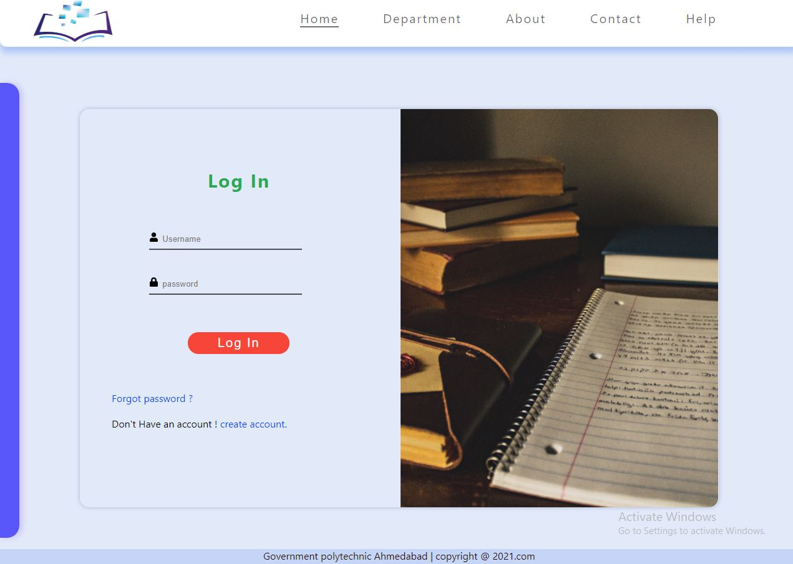
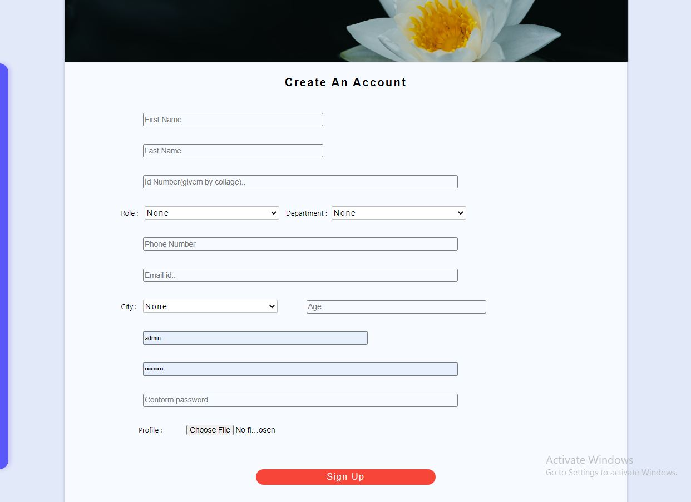
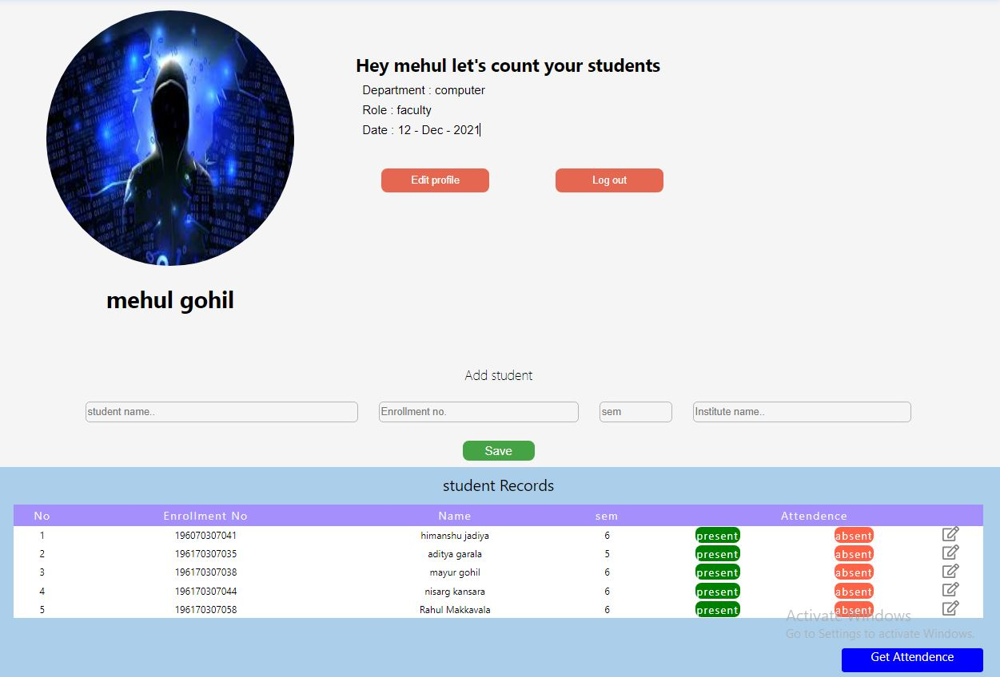
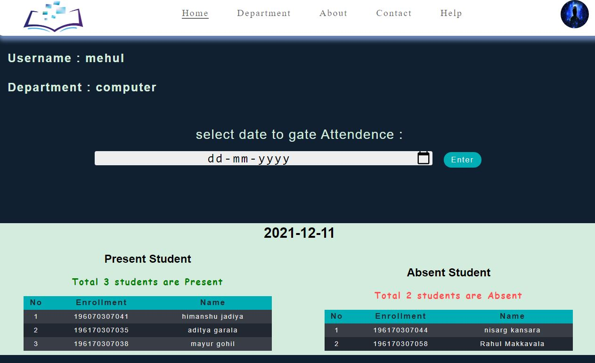
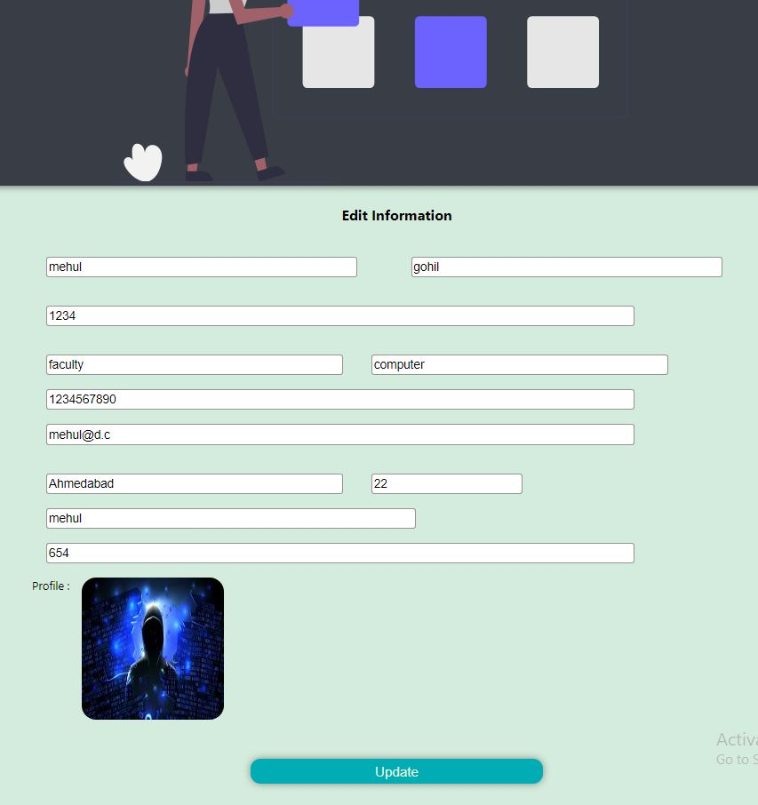
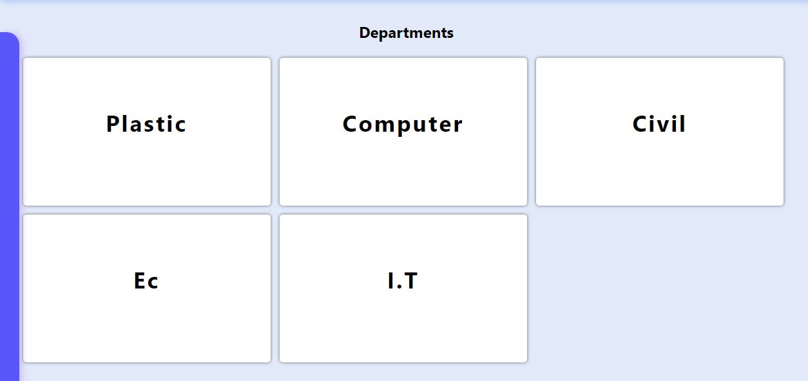
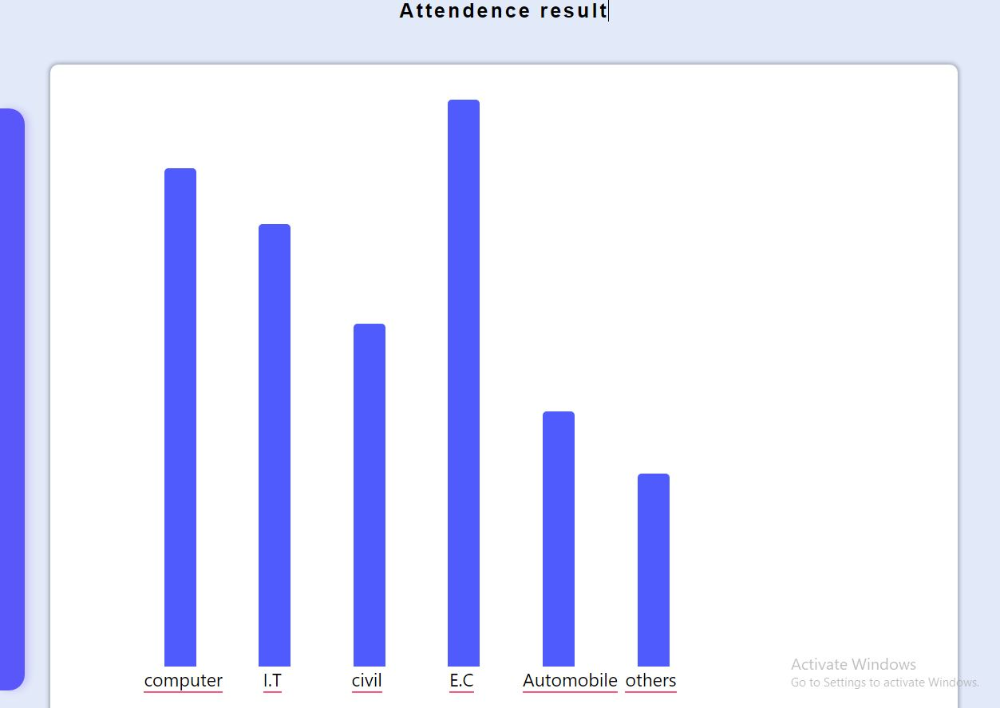
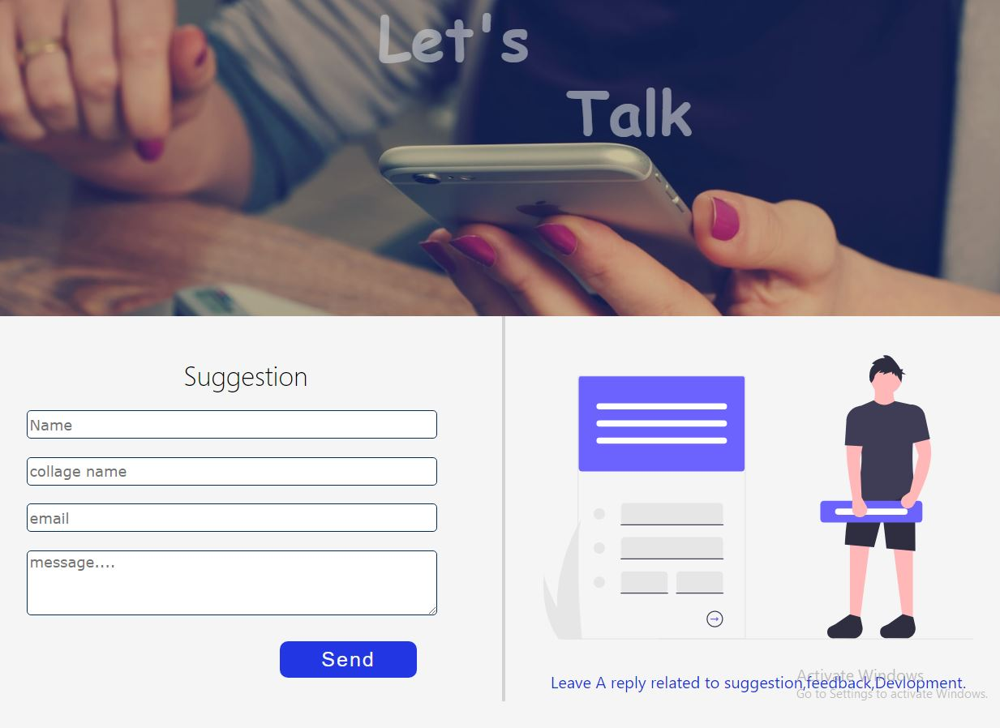

Hey , It's Devloper This Project Is For Taking Attendence online (virtual).I Have Designed This Project For Faculty , Principle or staff Not for student. I hope Using This software makes Your Process Faster.
Below i Have Given some Instruction or Steps to use this Project Read that is You are Beginer.


First Login with Your User-Id and Password. If You are New Then create New Account Using click on Create Account to use this software.
 After Login or sign up succesfully You Will see the profile and students of your department. You will also see the Add students section to add students in your Department By default Department of the student is Your Department. And You can take Attendence Of your student and to download The attendence of any date click on Get Attendence button.
After click On Get Attendence You will see the list of Absent And Present students. To Get specific Date Attendence Input Date in Date selector.
To Edit Profile and Information Go To home page End click On Edit Profile Button. You can edit all fields acept your Profile. which is shown below.
you can see the department and Attendence chart of Department students There You can see the all Department student attendence.
 You can Go On Contact page and send your Suggestion about This software like security,feedback,Suggestion,bugs or draw back etc. You can also contact At Social Media Using Links . And emails. There is also quick link section for jump to another page.
